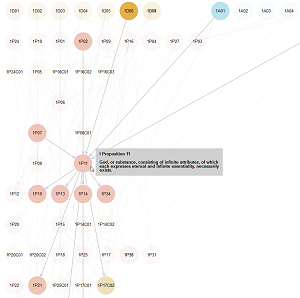
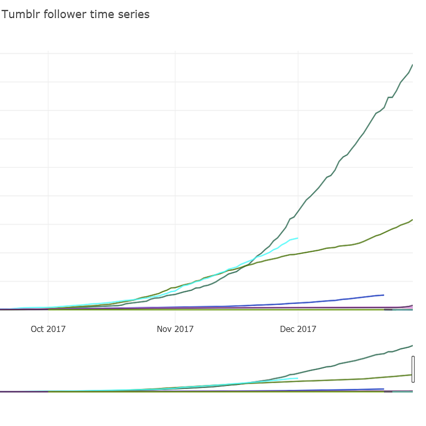
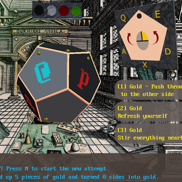
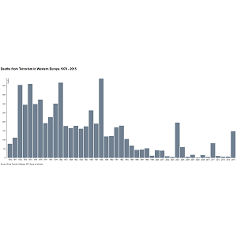
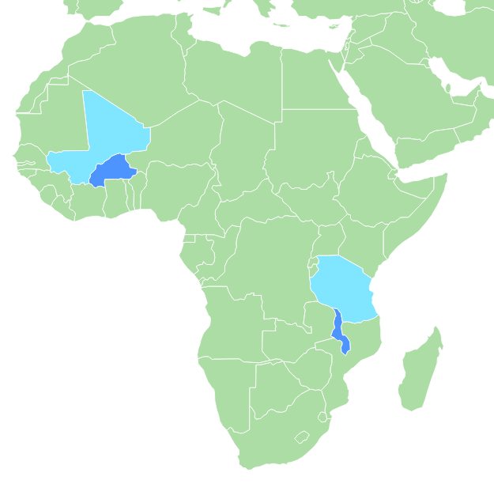
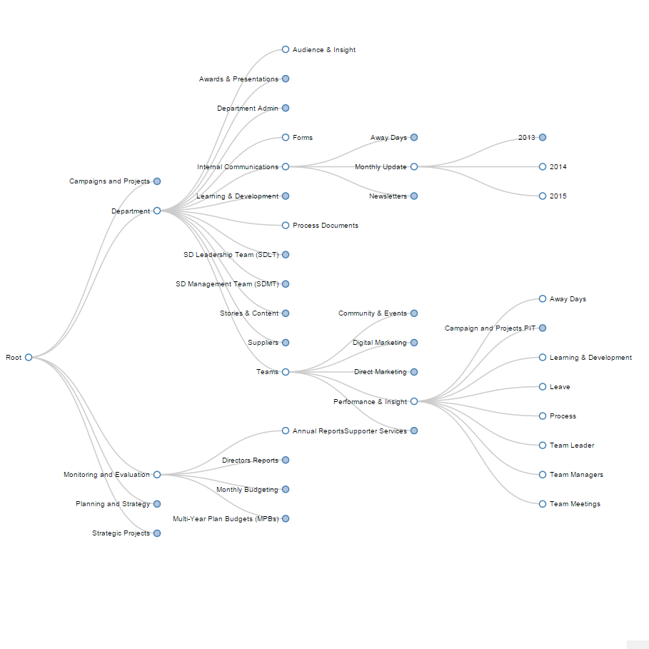

Petri Autio
Portfolio page
Hegel's Science of Logic in D3.js

Interactive visualisation for the exploration of this highly structured work of philosophy.
Spinoza's Ethics in D3.js
A directed interactive force-graph of the logical connections in Spinoza's Ethics.
Tumblr blog growth tracking
Visualising the social media follower growth of automated Tumblr image blogs using Python and Plotly.
Radio box controller
Custom controller made out of a vintage radio with a screen and Arduino controller. Unity game where you fly a zeppelin on Venus. Alt Ctrl Jam 2014 winner - collaboration with Robin Baumgarten. Exhibited in Berlin and San Francisco
Rotator

Custom controller made with three independently moving motorised wheels. Exhibited at GDC 2016 San Francisco. Collaboration with Robin Baumgarten.
Stir Mercury
Puzzle game on a dodecahedral board made for the 7DRL jam intended for further development on AR devices.
Polytank

Retro game for surfing the wave of creation in a plastic tank. GBJam 2015
Deaths from Terrorism in Western Europe
An interactive chart of terrorism related deaths in Western Europe 1970-2015.
A map of recent monitoring surveys
An interactive map of recent WASH post-implementation monitoring surveys.
Directory tree visualiser in D3.js
Tool to parse a directory structure into JSON and make a navigable tree of it using D3.js.